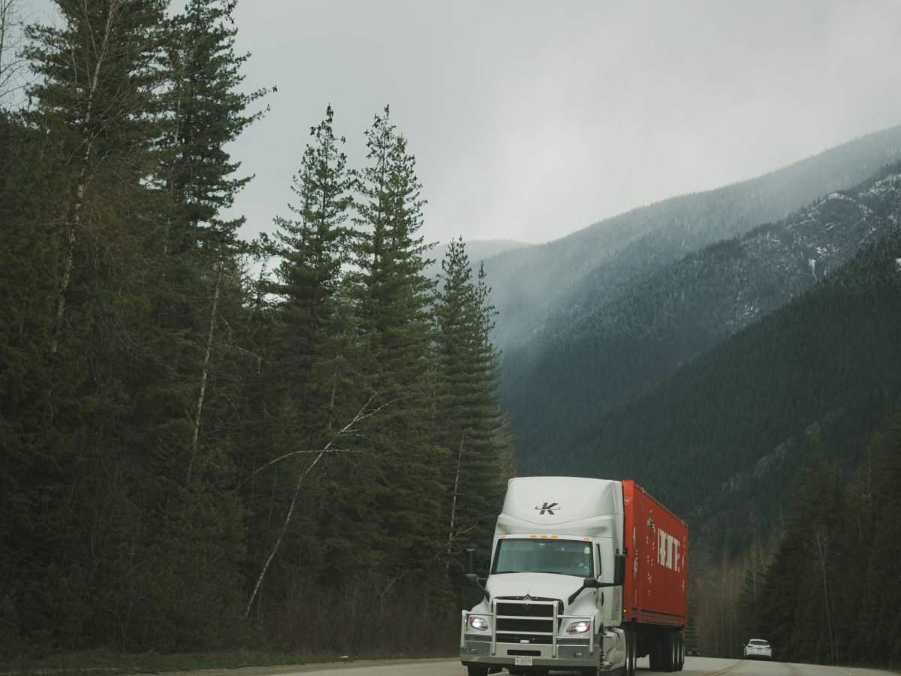
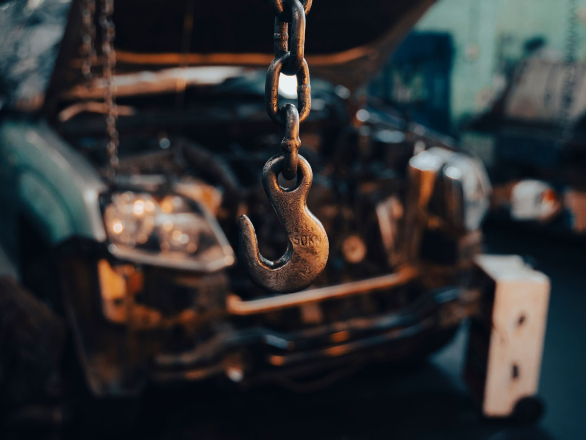
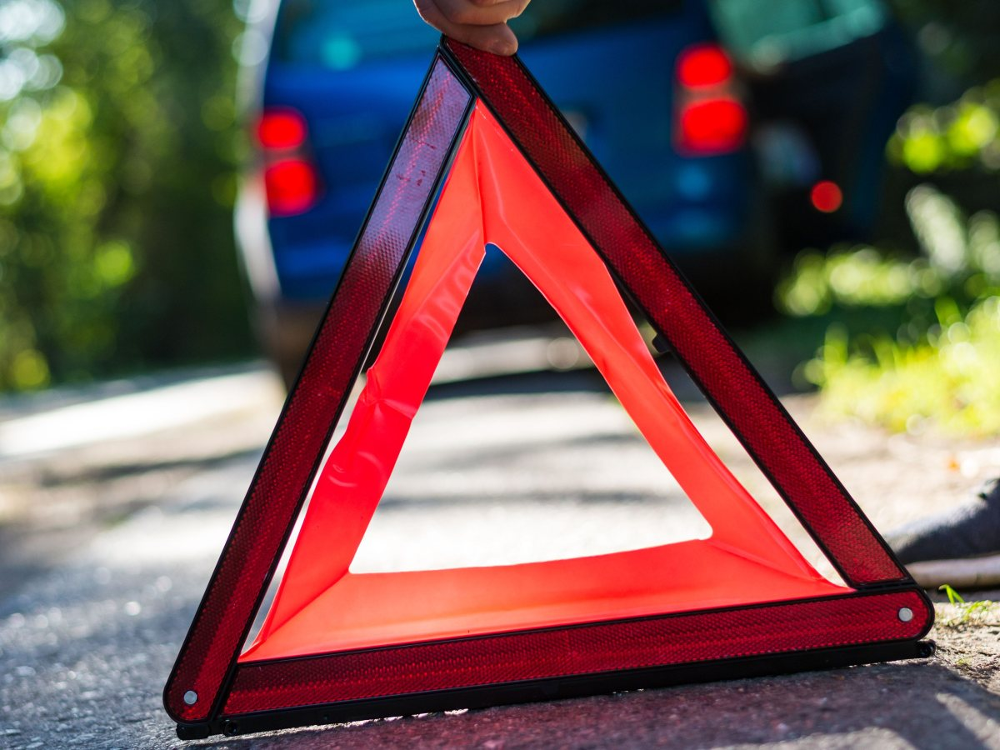
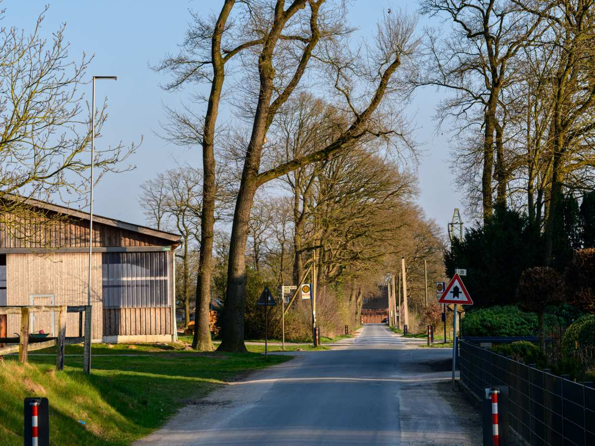
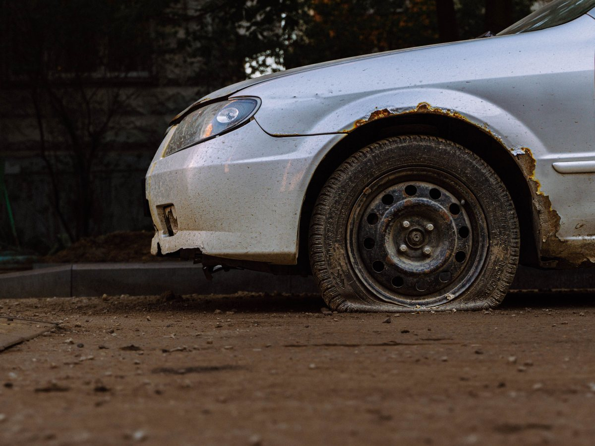
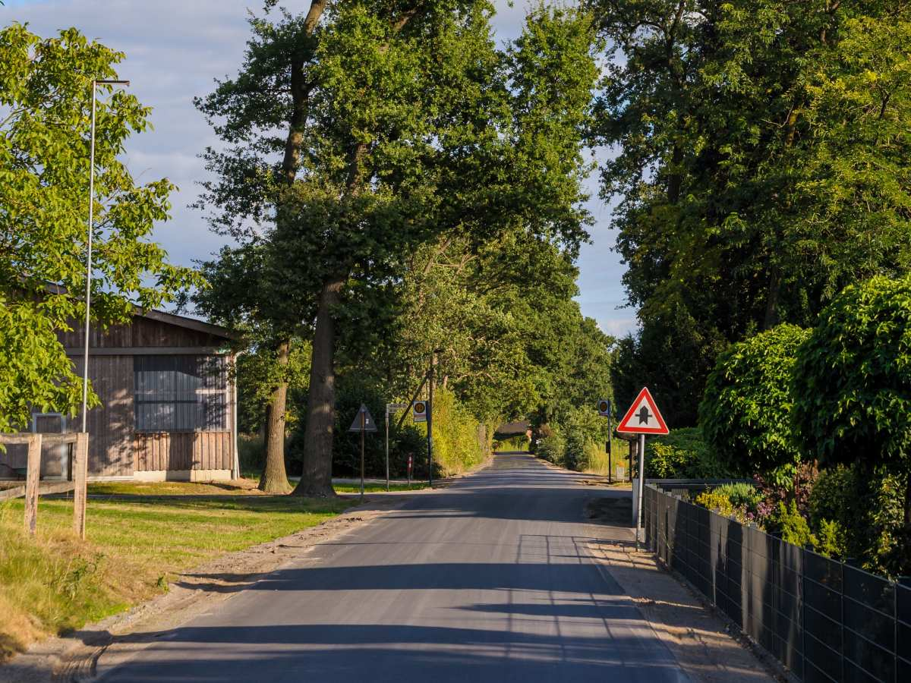
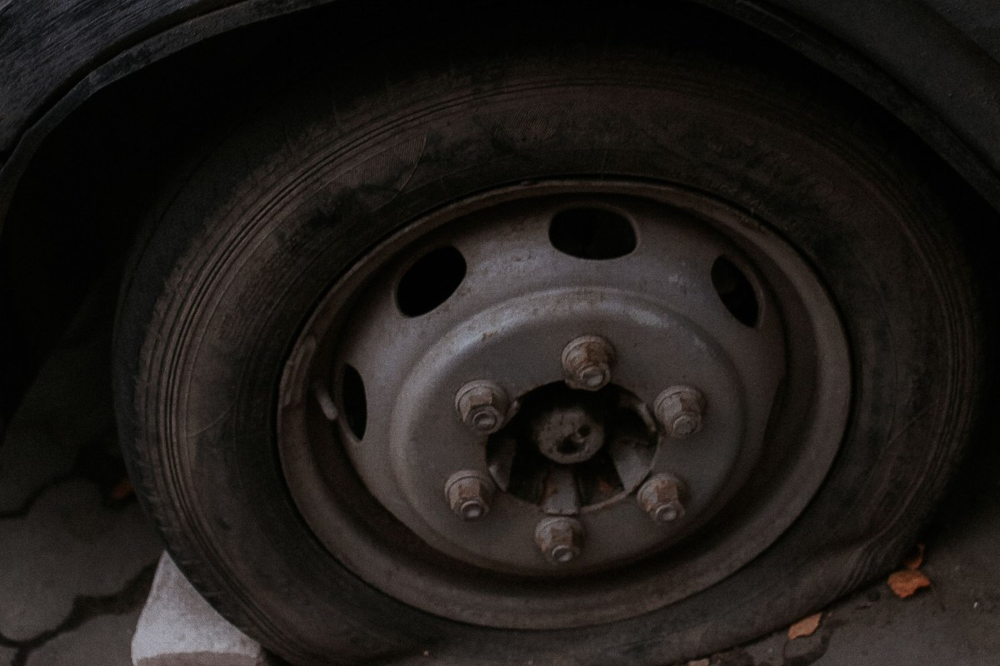
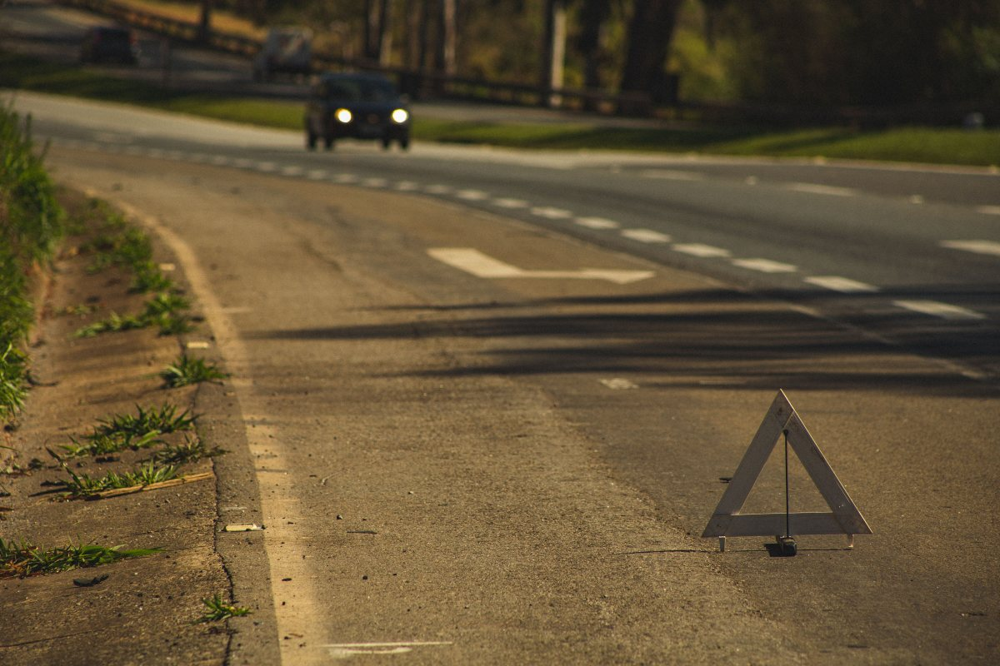
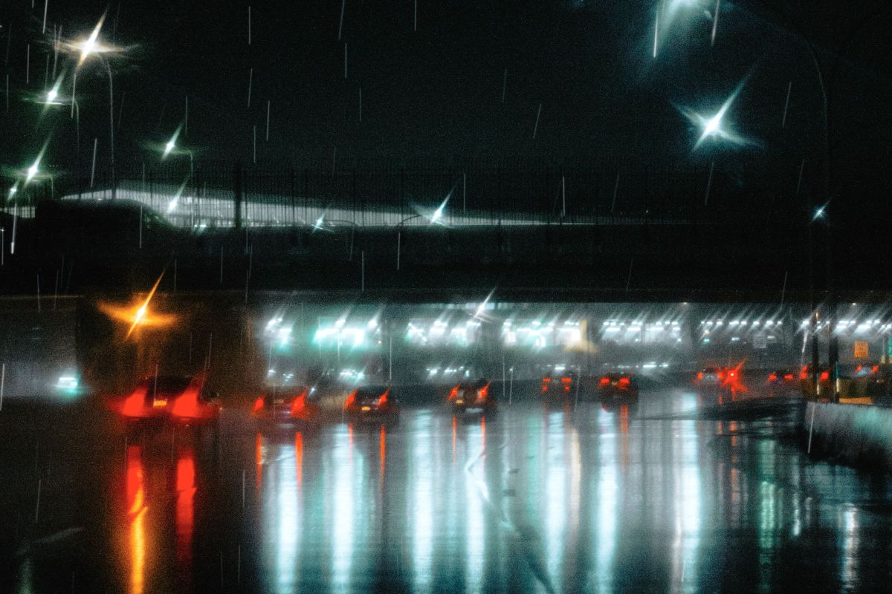
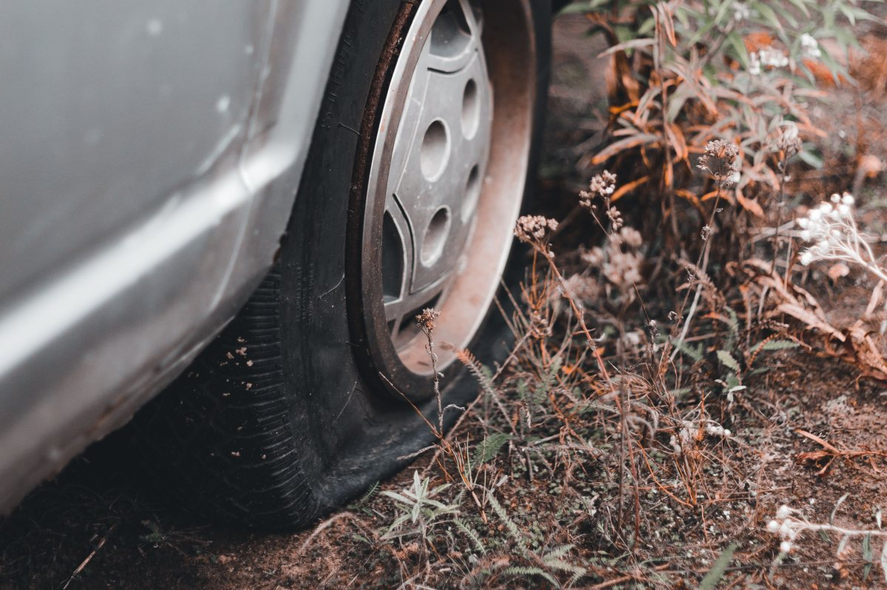

Grúa 24 horas · Gorbea
Quedó en panne. Llame, que vamos.
Grúa cama y levante, de día y de noche, en la ruta y en el campo.
- 24horas, todos los días
- 30reseñas en Google
- 5,0de nota: todas de cinco
- 0páginas vivas: su sitio de Google cerró
Entre la llamada y la grúa
Mientras espera, hágase ver
La grúa va en camino: lo importante ahora es que lo vean.
- 01
Balizas encendidas
Apenas se detenga, aunque sea de día.
- 02
Chaleco puesto
Antes de bajarse del auto.
- 03
Triángulo atrás
Lejos del auto, para que frenen a tiempo.
- 04
Fuera de la calzada
Espere detrás de la barrera, no junto al auto.
Recomendaciones generales de seguridad en la ruta.
Las pannes no avisan, y la grúa tampoco duerme.
En Gorbea y alrededores
Servicios
-

Sobre la plataforma
Grúa cama
El auto viaja arriba, sin rodar.
-

Con gancho
Levante
Para sacarlo de donde quedó.
-

De noche también
Rescate en ruta
A cualquier hora.
-

Al taller o a la casa
Traslado
Donde usted diga.
-

Sin grúa
Pinchazo o batería
A veces se resuelve ahí mismo.
-

En el barro
Caminos rurales
Donde no llega cualquiera.
Grúa cama y levante están verificados; el resto lo confirma el servicio.
30 reseñas, todas de cinco.
Nadie reseña una grúa que llegó tarde con cinco estrellas
En la ruta
De día, de noche y con lluvia




Fotos de referencia: la grúa de verdad la muestra Grúas del Sur.
Dónde estamos
José Agustín Gómez 902, Gorbea
- Base
- José Agustín Gómez 902
- Teléfono
- +56 9 5409 8869
- Reseñas
- 30 en Google, nota 5,0
- Atiende
- 24 horas, todos los días
Al llamar, diga en qué kilómetro está y hacia dónde iba.
José Agustín Gómez 902, Gorbea Abrir en Google Maps
Para el dueño
Qué es real y qué falta
Lo verificado
El nombre, la base, el teléfono, las 30 reseñas con 5,0, que atiende 24 horas y que hace grúa cama y levante.
Lo de ejemplo
Pinchazo, batería y caminos rurales.
Lo que falta
Hasta dónde llega, valores de referencia y fotos de la grúa.